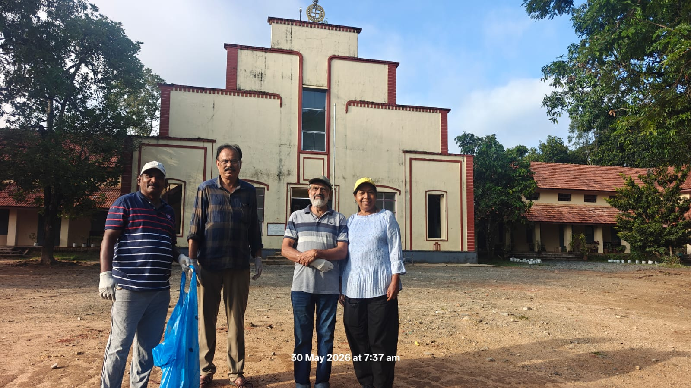
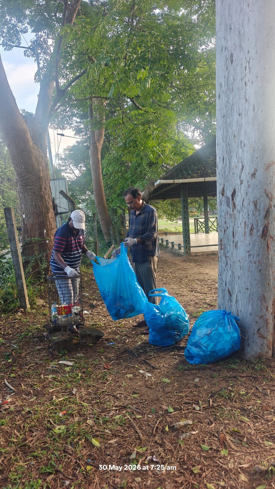
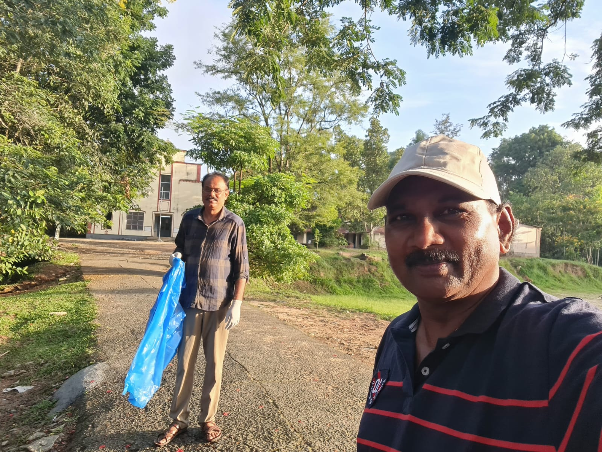

Office Bearers / ഭാരവാഹികൾ
Joseph Plato Pereira
President
Sankaranarayanan M
General Secretary
Ratheesh kumar C K
Treasurer
Earlier Office Bearers / മുൻ ഭാരവാഹികൾ
Joseph P (Gen. Sec) | R Rajan (President) | Thankachan P J (Treasurer)

"Connecting together for friendship, social service, and shared joy among all members, without bias or distinction."
"എല്ലാ അംഗങ്ങളെയും വലുതോ ചെറുതോ എന്ന വ്യത്യാസമില്ലാതെ, പക്ഷപാതമില്ലാതെ, സൗഹൃദത്തിനും സാമൂഹ്യസേവനത്തിനും പരസ്പര സന്തോഷത്തിനുമായി ഒരുമിച്ച് ബന്ധിപ്പിക്കുക."
Help Find Our Batchmates / ബാച്ച്മേറ്റുകളെ കണ്ടെത്താംWe have a dedicated WhatsApp group for our batch members to stay connected. To ensure a peaceful and joyful environment for everyone, we strictly request all members to follow basic group ethics. Please refrain from posting any obscene, political, religious, or hurtful messages. Let us keep our platform focused on friendship and unity.
നമ്മുടെ ബാച്ച് അംഗങ്ങൾക്ക് പരസ്പരം ബന്ധപ്പെടുന്നതിനായി ഒരു വാട്ട്സ്ആപ്പ് ഗ്രൂപ്പ് നിലവിലുണ്ട്. എല്ലാവർക്കും സന്തോഷകരമായ ഒരു അന്തരീക്ഷം ഉറപ്പാക്കാൻ, ഗ്രൂപ്പിലെ പെരുമാറ്റച്ചട്ടങ്ങൾ നിർബന്ധമായും പാലിക്കാൻ അഭ്യർത്ഥിക്കുന്നു. അശ്ലീലമായതോ, രാഷ്ട്രീയമോ മതപരമോ ആയ കാര്യങ്ങളോ, മറ്റുള്ളവരെ വേദനിപ്പിക്കുന്നതോ ആയ സന്ദേശങ്ങൾ ഗ്രൂപ്പിൽ പങ്കുവെക്കുന്നത് കർശനമായി ഒഴിവാക്കുക. നമ്മുടെ കൂട്ടായ്മ സൗഹൃദത്തിനും ഐക്യത്തിനും മാത്രമുള്ളതായിരിക്കട്ടെ.
Welcome to the official website of Nostalgia 76-77. This platform is an extension of our vibrant WhatsApp group, created to keep our childhood friendships alive. Our core focus is on unity, social service, and sharing moments of joy. We wish to stay connected, support one another in times of need, and cherish the golden memories of our school days.
നോസ്റ്റാൾജിയ 76-77 ബാച്ചിന്റെ ഔദ്യോഗിക വെബ്സൈറ്റിലേക്ക് സ്വാഗതം. നമ്മുടെ സജീവമായ വാട്ട്സ്ആപ്പ് കൂട്ടായ്മയുടെ തുടർച്ചയായാണ് ഈ വേദി ഒരുക്കിയിരിക്കുന്നത്. സൗഹൃദം, ഐക്യം, സാമൂഹ്യസേവനം, സന്തോഷങ്ങൾ പങ്കിടൽ എന്നിവയാണ് നമ്മുടെ പ്രധാന ലക്ഷ്യങ്ങൾ. പരസ്പരം താങ്ങായി നിൽക്കാനും സ്കൂൾ കാലത്തെ സുവർണ്ണ ഓർമ്മകൾ കാത്തുസൂക്ഷിക്കാനും ഈ കൂട്ടായ്മ നമ്മെ സഹായിക്കും.
President
General Secretary
Treasurer
Joseph P (Gen. Sec) | R Rajan (President) | Thankachan P J (Treasurer)
KALPETTA MAIN BRANCH | IFSC: KSBK0001714


